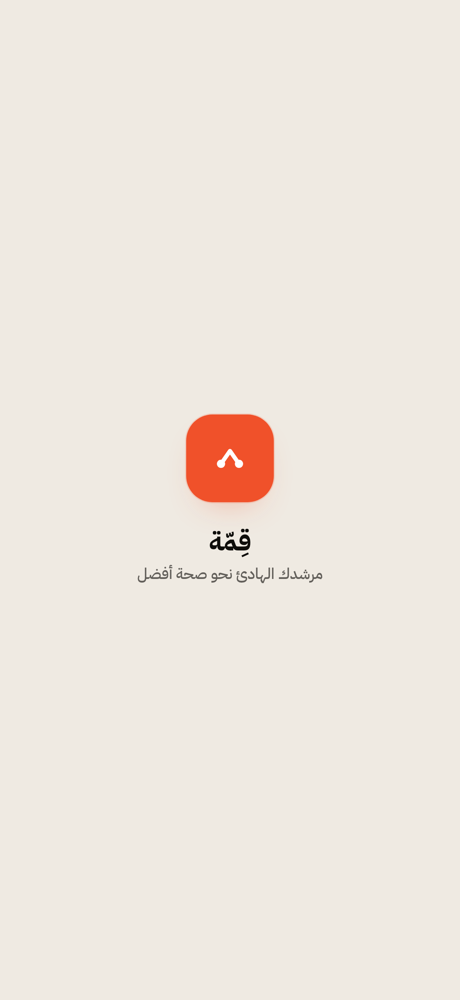
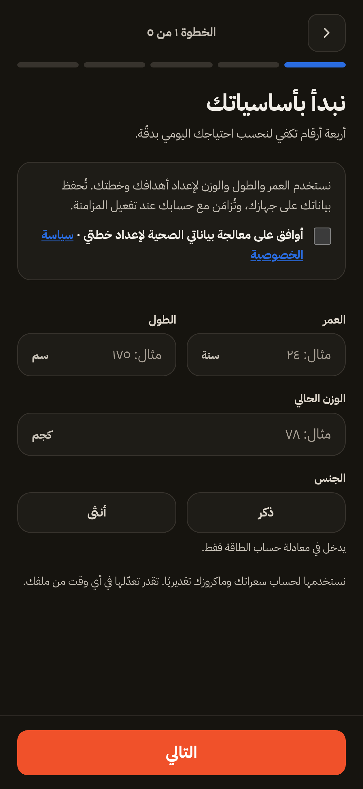
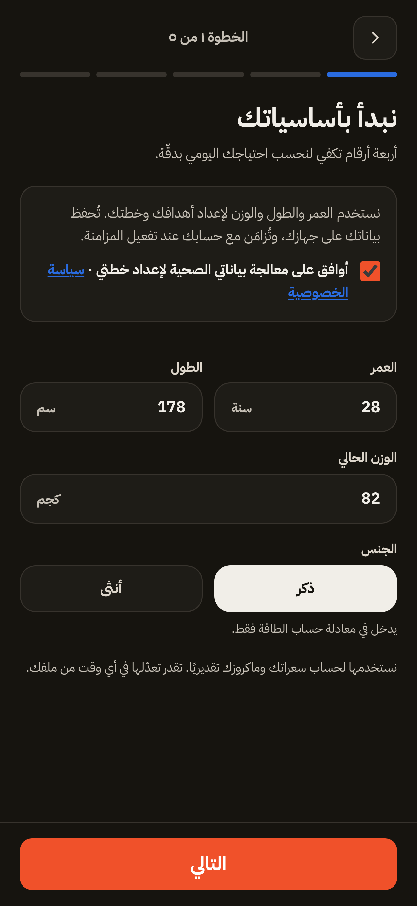
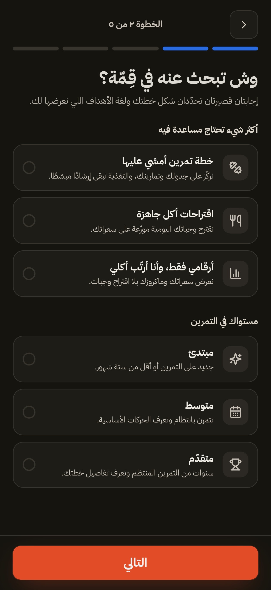
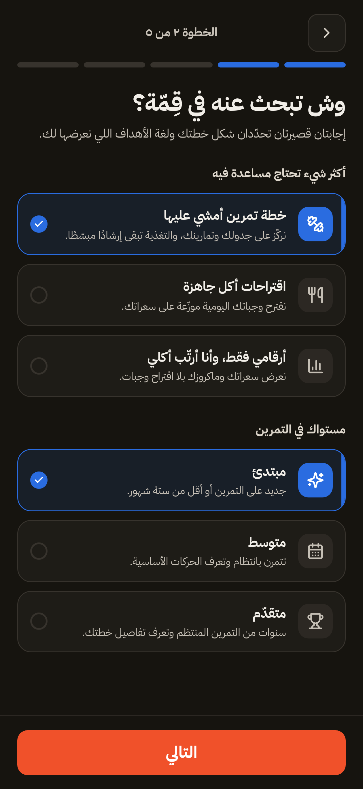
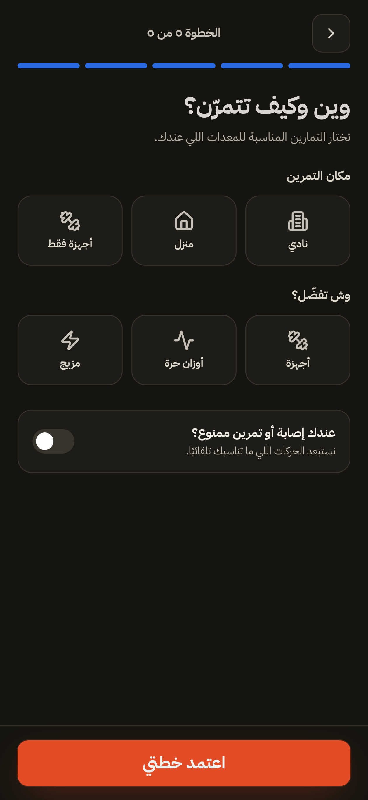
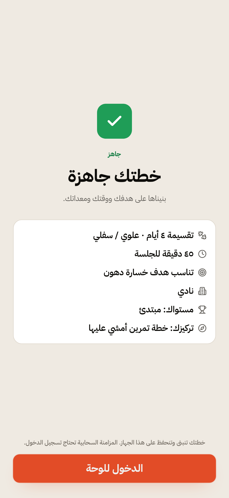
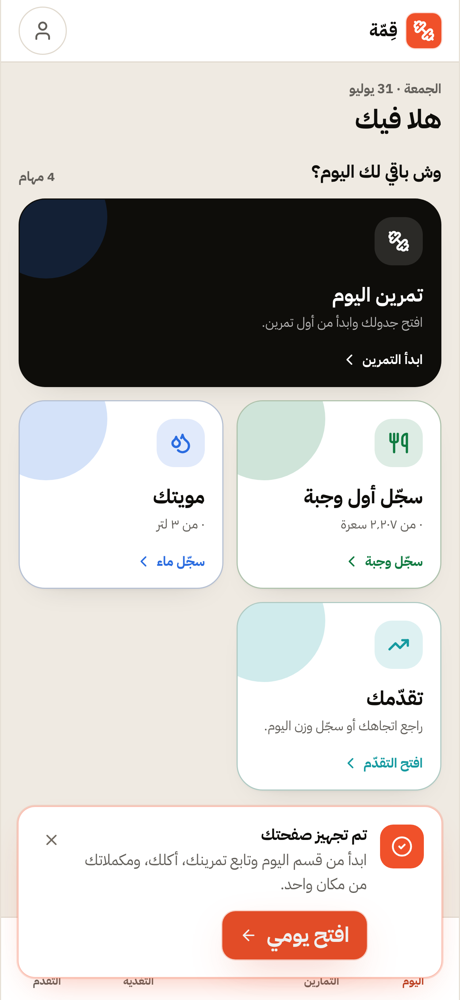
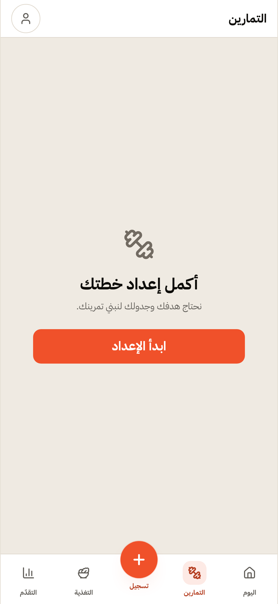
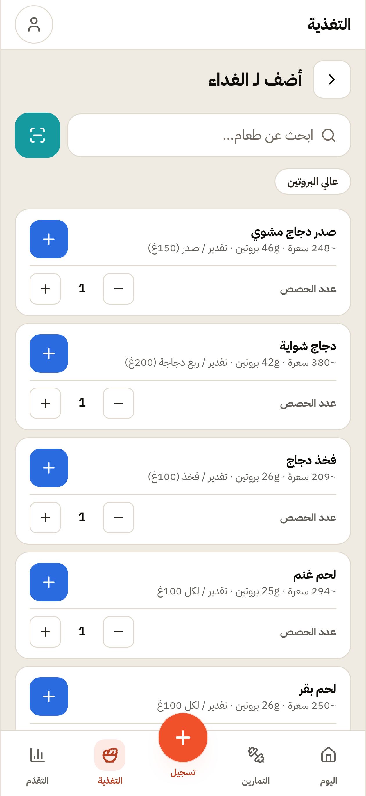

رحلة المولود الجديد
The newcomer journey
التقاطات مرفوعة — لا تُصلَح في هذه الحارة
- لا مسار ضيف من شاشة الترحيب — «ابدأ الآن» تقود إلى إنشاء حساب
أزرار الترحيب: EN · ابدأ الآن · عندك حساب؟ تسجيل الدخول — و«ابدأ الآن» تنقل إلى #/login. ونصّ «كمّل كضيف» موجود في src/config/strings.ts (٤ مداخل عربي+إنجليزي) ولا يشير إليه أي مكوّن: StartViewV2 يرسم onSignup وonLogin فقط. وعد «محلي افتراضيًا» (الميثاق §9) بلا مدخل في تدفّق v2.
- مسارات التطبيق محجوبة للزائر غير المسجَّل — #/today و#/onboarding تعرضان «الصفحة غير موجودة»
زائر بلا جلسة لا يصل إلى أي شاشة منتج، والرسالة المعروضة «غير موجودة» لا «تحتاج حسابًا» — رسالة مضلّلة تصف الحجب كعطل.
- الإعداد يكتب الخطة وشاشة التمارين لا تراها — مسار المولود الجديد ينتهي إلى طريق مسدود
بعد إعداد كامل واعتماد الخطة، تعرض #/workout «أكمل إعداد خطتك» بينما التخزين يحمل الخطة فعلًا: qimmah:workoutCalendar:v1 = {split:"upper_lower", daysPerWeek:4, source:"migration"} ويطابق ملخّص «خطتك جاهزة» المعروض قبل لحظات · qimmah:customization:v1 مكتوب (6669 حرفًا). أي أن الحالة محفوظة وشرط «الإعداد مكتمل» في شاشة التمارين لا يقرؤها. واللوحة تعد المستخدم بـ«تمرين اليوم» فيصل إلى «ابدأ الإعداد» — وعدٌ يخلفه المنتج في أول دقيقة.
خطوات متخطّاة (معلَنة)
- جولة تُسجَّل وتُنهى بالتأكيد — محجوب بـ: الالتقاطة: شاشة التمارين لا ترى الخطة المبنيّة
- البحث عن «كبسة» وتسجيلها — محجوب بـ: لوحة إضافة الوجبة لم تُفتح — حقل البحث غير متاح

Welcome — the first screen

Step 1 — basics and health consent

Basics filled — 28y · 178cm · 82kg

Step 2 — intent and level

Intent and beginner level picked
Step 3 — goal in beginner wording
Step 4 — training days and duration

Step 5 — place and equipment

Plan ready — the first output

Today dashboard — after approving the plan

Workout tab after approving the plan

Nutrition screen

Add-a-meal sheet